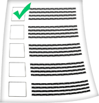

-

This app is about the Code of Practice which has been agreed for social care workers and the employers of social care workers in Wales.
-

This introduction will help you to understand:
- what the Code is for,
- and what it means to:
- 1. Service Users
- 2. Members of the public
-

The Code will help you understand:
- 1. How a social care worker should treat you.
- 2. How employers should support social care workers to do their job well.
-

There is a Code of Practice for social care workers and a Code of Practice for employers. They have been put together in this app.
-

The Code of Practice for social care workers is a list which gives the standards social care workers must use in their work.
-
The Code makes clear what the standards are. It also makes sure workers know the standards expected of them by employers, service users and the public.
-

The Code of Practice for employers of social care workers tells employers what they must do to make sure social care workers keep to the rules.
-

The Code tells employers they must:
- 1. Keep to the standards in their Code.
- 2. Help social care workers to do what it says in their Code.
- 3. Take action if social care workers do not meet the standards which are expected.
-

The Care Councils will make sure everyone knows about the standards by showing them to lots of people.
 Back to HOME
Back to HOME